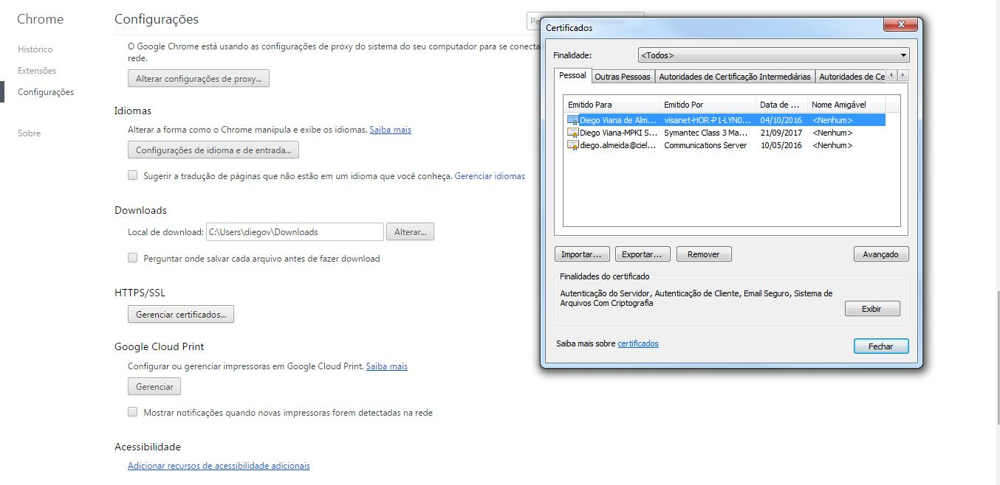
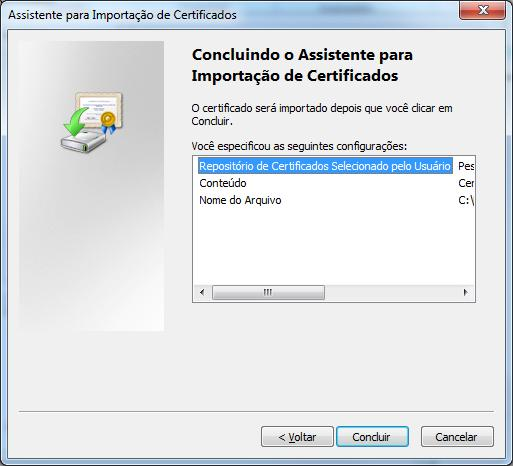
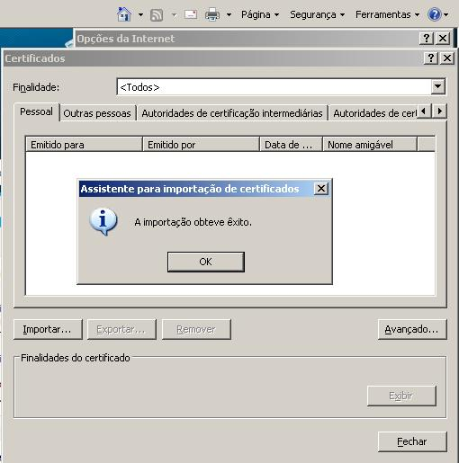

Esse guia tem como propósito
Após a leitura deste manual, caso ainda persistam dúvidas (técnicas ou não), a Cielo disponibiliza o suporte técnico 24 horas por dia, 7 dias por semana em idiomas (Português e Inglês), nos seguintes contatos:
Para facilitar o entendimento, listamos abaixo um pequeno glossário com os principais termos relacionados ao eCommerce, ao mercado de cartões e adquirencia:
O Certificado SSL para servidor web oferece autenticidade e integridade dos dados de um web site, proporcionando aos clientes das lojas virtuais a garantia de que estão realmente acessando o site que desejam, e não uma um site fraudador.
Empresas especializadas são responsáveis por fazer a validação do domínio e, dependendo do tipo de certificado, também da entidade detentora do domínio.


O Certificado EV foi lançado no mercado recentemente e garante um nível de segurança maior para os clientes das lojas virtuais.
Trata-se de um certificado de maior confiança e quando o https for acessado a barra de endereço ficará verde, dando mais confiabilidade aos visitantes do site.
Basta instalar os três arquivos a seguir na Trustedstore do servidor. A Cielo não oferece suporte para a instalação do Certificado. Caso não esteja seguro sobre como realizar a instalação do Certificado EV, então você deverá ser contatado o suporte do fornecedor do seu servidor.
O passo a passo para a instalação do Certificado EV deverá ser contatado o suporte do fornecedor do seu servidor.
Normalmente, o browser faz a atualização do Certificado automaticamente, caso não o faça e o cliente entre em contato deverá ser informado os seguintes passos:
Salvar os três arquivos abaixo em uma pasta nova, ou que relembre facilmente, pois será utilizada posteriormente:
No “Internet Explorer”, clique no menu “Ferramentas” e acesse as “Opções da Internet”:

No “Firefox”, clique no menu “Abrir Menu” e acesse “Avançado” e “Opções”:

No “Chrome”, clique no “Personalizar e Controlar o Google Chrome” e acesse “Configurações” e “Mostrar configurações avançadas… “Alterar Configurações de Proxy e “Conteúdo” e Certificados:

No Internet Explorer, em “Certificados”, clique em “Importar”.

No Firefox clique em “Ver Certificados”, clique em “Importar”

No Chrome clique em “Gerenciar Certificados”, clique em “Importar”

No Internet Explorer e Chrome “Assistente para Importação de Certificados”, clique em “Avançar”.


No Firefox “Aba Servidores ”, clique em “Importar”

No Chrome e Internet Explorer “Assistente para Importação de Certificados”, clique em “Procurar”, procure a pasta onde estão os arquivos e selecione o arquivo “eCommerce.cielo.com.br.crt, clique em “Abrir” e em seguida “Avançar”.


Selecionar a opção desejada: adicionar o Certificado em uma pasta padrão ou procurar a pasta de sua escolha.

Clique em “Concluir”.

Clique em “Ok” para concluir a importação.

O Certificado poderá ser visualizado na aba padrão “Outras Pessoas” ou na escolhida pelo cliente.

Repita o mesmo procedimento para os 3 arquivos enviados.
Em caso de dúvidas em qualquer etapa ou outras informações técnicas, entre em contato com o Suporte Web do Cielo e-Commerce nos seguintes canais:
Horário de atendimento: 24h por dia, 7 dias por semana.
| Ordem | 3.0 | Ordem | 1.5 | Observações | |
|---|---|---|---|---|---|
| 1 | –Header.MerchantId | 1 | dados-ec.numero | O 1.5 recebe EC no corpo do request e o 3.0 recebe o MerchantId no header. Estes campos não possuem o mesmo valor | |
| 2 | –Header.MerchantKey | 2 | dados-ec.chave | O 1.5 recebe a Chave no corpo do request e o 3.0 recebe o MerchantKey no header. Estes campos não possuem o mesmo valor | |
| 3 | –Header.RequestId | 30 | – | No 1.5 não existe campo com o identificador do Request | |
| 4 | MerchantOrderId | 11 | dados-pedido.numero | ||
| 5 | Customer.Name | 31 | – | O 1.5 não recebe dados relacionados ao comprador | |
| 6 | Customer.Email | 32 | – | O 1.5 não recebe dados relacionados ao comprador | |
| 7 | Customer.Birthdate | 33 | – | O 1.5 não recebe dados relacionados ao comprador | |
| 8 | Customer.Address.Street | 34 | – | O 1.5 não recebe dados relacionados ao comprador | |
| 9 | Customer.Address.Number | 35 | – | O 1.5 não recebe dados relacionados ao comprador | |
| 10 | Customer.Address.Complement | 36 | – | O 1.5 não recebe dados relacionados ao comprador | |
| 11 | Customer.Address.ZipCode | 37 | – | O 1.5 não recebe dados relacionados ao comprador | |
| 12 | Customer.Address.City | 38 | – | O 1.5 não recebe dados relacionados ao comprador | |
| 13 | Customer.Address.State | 39 | – | O 1.5 não recebe dados relacionados ao comprador | |
| 14 | Customer.Address.Country | 40 | – | O 1.5 não recebe dados relacionados ao comprador | |
| 15 | Customer.DeliveryAddress.Street | 41 | – | O 1.5 não recebe dados relacionados ao comprador | |
| 16 | Customer.DeliveryAddress.Number | 42 | – | O 1.5 não recebe dados relacionados ao comprador | |
| 17 | Customer.DeliveryAddress.Complement | 43 | – | O 1.5 não recebe dados relacionados ao comprador | |
| 18 | Customer.DeliveryAddress.ZipCode | 44 | – | O 1.5 não recebe dados relacionados ao comprador | |
| 19 | Customer.DeliveryAddress.City | 45 | – | O 1.5 não recebe dados relacionados ao comprador | |
| 20 | Customer.DeliveryAddress.State | 46 | – | O 1.5 não recebe dados relacionados ao comprador | |
| 21 | Customer.DeliveryAddress.Country | 47 | – | O 1.5 não recebe dados relacionados ao comprador | |
| 22 | Payment.Type | 9 | forma-pagamento.produto | No 3.0 a forma de pagamento (Crédito e Débito) e o tipo de juros são definidos em campos distintos | |
| 23 | Payment.Amount | 12 | dados-pedido.valor | ||
| 24 | Payment.Currency | 13 | dados-pedido.moeda | ||
| 25 | Payment.Country | 48 | – | ||
| 26 | Payment.Provider | 49 | – | O 1.5 não dispobiliza outras formas de pagamento que não seja Cielo. O 3.0 dispobibiliza, além da Cielo, Bradesco e BB | |
| 27 | Payment.SeviceTaxAmount | 17 | dados-pedido.taxa-embarque | ||
| 28 | Payment.Installments | 10 | forma-pagamento.parcelas | ||
| 29 | Payment.Interest | 9 | forma-pagamento.produto | No 3.0 a forma de pagamento (Crédito e Débito) e o tipo de juros são definidos em campos distintos | |
| 30 | Payment.Capture | 20 | capturar | ||
| 31 | Payment.SoftDescriptor | 18 | dados-pedido.soft-descriptor | ||
| 32 | Payment.ReturnUrl | 19 | url-retorno | ||
| 33 | Payment.ExtraData[] | 21 | campo-livre | No 1.5 é uma string e no 3.0 é uma coleção chave/valor | |
| 34 | Payment.Authenticate | 23 | autorizar | ||
| 35 | Payment.CreditCard.CardNumber | 3 | dados-portador.numero | ||
| 36 | Payment.CreditCard.Holder | 50 | – | ||
| 37 | Payment.CreditCard.ExpirationDate | 4 | dados-portador.validade | ||
| 38 | Payment.CreditCard.SecurityCode | 6 | dados-portador.codigo-seguranca | ||
| 39 | Payment.CreditCard.CardToken | 7 | dados-portador.token | ||
| 40 | Payment.CreditCard.SaveCard | 24 | gerar-token | ||
| 41 | Payment.CreditCard.Brand | 8 | forma-pagamento.bandeira | ||
| 42 | Payment.RecurrentPayment.EndDate | 51 | – | O 1.5 utiliza uma outra forma de recorrência | |
| 43 | Payment.RecurrentPayment.Interval | 52 | – | ||
| 44 | Payment.RecurrentPayment.AuthorizeNow | 53 | – | ||
| 45 | – | 5 | dados-portador.indicador | No 3.0 não existe campo para informar o envio do CVV. | |
| 46 | – | 14 | dados-pedido.data-hora | ||
| 47 | – | 15 | dados-pedido.descricao | ||
| 48 | – | 16 | dados-pedido.idioma | ||
| 49 | – | 22 | bin | ||
| 50 | – | 25 | avs.dados-avs.endereco | O 3.0 ainda não suporta AVS | |
| 51 | – | 26 | avs.dados-avs.complemento | O 3.0 ainda não suporta AVS | |
| 52 | – | 27 | avs.dados-avs.numero | O 3.0 ainda não suporta AVS | |
| 53 | – | 28 | avs.dados-avs.bairro | O 3.0 ainda não suporta AVS | |
| 54 | – | 29 | avs.dados-avs.cep | O 3.0 ainda não suporta AVS |
| Ordem | 3.0 | Ordem | 1.5 | Observações | |
|---|---|---|---|---|---|
| 1 | –Header.MerchantId | 30 | – | O 1.5 não retorna os dados de request no response | |
| 2 | –Header.MerchantKey | 31 | – | O 1.5 não retorna os dados de request no response | |
| 3 | –Header.RequestId | 32 | – | ||
| 4 | MerchantOrderId | 3 | dados-pedido.numero | ||
| 5 | Customer.Name | 33 | – | ||
| 6 | Customer.Email | 34 | – | ||
| 7 | Customer.Birthdate | 35 | – | ||
| 8 | Customer.Address.Street | 36 | – | ||
| 9 | Customer.Address.Number | 37 | – | ||
| 10 | Customer.Address.Complement | 38 | – | ||
| 11 | Customer.Address.ZipCode | 39 | – | ||
| 12 | Customer.Address.City | 40 | – | ||
| 13 | Customer.Address.State | 41 | – | ||
| 14 | Customer.Address.Country | 42 | – | ||
| 15 | Customer.DeliveryAddress.Street | 43 | – | ||
| 16 | Customer.DeliveryAddress.Number | 44 | – | ||
| 17 | Customer.DeliveryAddress.Complement | 45 | – | ||
| 18 | Customer.DeliveryAddress.ZipCode | 46 | – | ||
| 19 | Customer.DeliveryAddress.City | 47 | – | ||
| 20 | Customer.DeliveryAddress.State | 48 | – | ||
| 21 | Customer.DeliveryAddress.Country | 49 | – | ||
| 22 | Payment.Type | 11 | forma-pagamento.produto | ||
| 23 | Payment.Amount | 4 | dados-pedido.valor | ||
| 23 | Payment.Amount | 17 | autenticacao.valor | ||
| 23 | Payment.Amount | 22 | autorizacao.valor | ||
| 24 | Payment.CapturedAmount | 29 | captura.valor | ||
| 25 | Payment.Currency | 5 | dados-pedido.moeda | ||
| 26 | Payment.Country | 50 | – | O 1.5 não retorna os dados de request no response | |
| 27 | Payment.Provider | 51 | – | O 1.5 não retorna os dados de request no response | |
| 28 | Payment.SeviceTaxAmount | 9 | dados-pedido.taxa-embarque | ||
| 29 | Payment.Installments | 12 | forma-pagamento.parcelas | ||
| 30 | Payment.Interest | 11 | forma-pagamento.produto | ||
| 31 | Payment.Capture | 52 | – | O 1.5 não retorna os dados de request no response | |
| 32 | Payment.SoftDescriptor | 53 | – | O 1.5 não retorna os dados de request no response | |
| 33 | Payment.ReturnUrl | 54 | – | O 1.5 não retorna os dados de request no response | |
| 34 | Payment.ExtraData[] | 55 | – | O 1.5 não retorna os dados de request no response | |
| 35 | Payment.Authenticate | 56 | – | O 1.5 não retorna os dados de request no response | |
| 36 | Payment.Tid | 1 | tid | ||
| 37 | Payment.ProofOfSale | 25 | autorizacao.nsu | ||
| 38 | Payment.AuthorizationCode | 19 | autorizacao.arp | ||
| 39 | Payment.Status | 13 | status | Os valores retornados pelas aplicações são diferentes | |
| 40 | Payment.ReturnCode | 14 | autenticacao.codigo | No 3.0 existe apenas um campo para código de retorno | |
| 40 | Payment.ReturnCode | 23 | autorizacao.lr | No 3.0 existe apenas um campo para código de retorno | |
| 40 | Payment.ReturnCode | 26 | captura.codigo | No 3.0 existe apenas um campo para código de retorno | |
| 41 | Payment.ReturnMessage | 15 | autenticacao.mensagem | No 3.0 existe apenas um campo para mensagem de retorno | |
| 41 | Payment.ReturnMessage | 20 | autorizacao.mensagem | No 3.0 existe apenas um campo para mensagem de retorno | |
| 41 | Payment.ReturnMessage | 27 | captura.mensagem | No 3.0 existe apenas um campo para mensagem de retorno | |
| 42 | Payment.ReceivedDate | 6 | dados-pedido.data-hora | ||
| 43 | Payment.CapturedDate | 28 | captura.data-hora | ||
| 44 | Payment.Eci | 18 | autenticacao.eci | ||
| 45 | Payment.CreditCard.CardNumber | 57 | – | O 1.5 não retorna os dados de request no response | |
| 46 | Payment.CreditCard.Holder | 58 | – | ||
| 47 | Payment.CreditCard.ExpirationDate | 59 | – | O 1.5 não retorna os dados de request no response | |
| 48 | Payment.CreditCard.SecurityCode | 60 | – | O 1.5 não retorna os dados de request no response | |
| 49 | Payment.CreditCard.CardToken | 61 | – | O 1.5 não retorna os dados de request no response | |
| 50 | Payment.CreditCard.SaveCard | 62 | – | O 1.5 não retorna os dados de request no response | |
| 51 | Payment.CreditCard.Brand | 10 | forma-pagamento.bandeira | ||
| 52 | Payment.RecurrentPayment.EndDate | 63 | – | A recorrência funciona de forma diferente nas APIs | |
| 53 | Payment.RecurrentPayment.Interval | 64 | – | A recorrência funciona de forma diferente nas APIs | |
| 54 | Payment.RecurrentPayment.AuthorizeNow | 65 | – | A recorrência funciona de forma diferente nas APIs | |
| 55 | Payment.Links[].Method | 66 | – | O 1.5 não suporta HATEOAS | |
| 56 | Payment.Links[].Rel | 67 | – | O 1.5 não suporta HATEOAS | |
| 57 | Payment.Links[].Href | 68 | – | O 1.5 não suporta HATEOAS | |
| 58 | – | 2 | pan | ||
| 59 | – | 7 | dados-pedido.descricao | ||
| 60 | – | 8 | dados-pedido.idioma | ||
| 61 | – | 16 | autenticacao.data-hora | ||
| 63 | – | 21 | autorizacao.data-hora | ||
| 64 | – | 24 | autorizacao.codigo |
| Ordem | 3.0 | Ordem | 1.5 | Observações | |
|---|---|---|---|---|---|
| 1 | –Header.MerchantId | 1 | dados-ec.numero | O 1.5 recebe EC no corpo do request e o 3.0 recebe o MerchantId no header. Estes campos não possuem o mesmo valor | |
| 2 | –Header.MerchantKey | 2 | dados-ec.chave | O 1.5 recebe a Chave no corpo do request e o 3.0 recebe o MerchantKey no header. Estes campos não possuem o mesmo valor | |
| 3 | –Header.RequestId | 30 | – | No 1.5 não existe campo com o identificador do Request | |
| 4 | MerchantOrderId | 11 | dados-pedido.numero | ||
| 5 | Customer.Name | 31 | – | O 1.5 não recebe dados relacionados ao comprador | |
| 6 | Customer.Email | 32 | – | O 1.5 não recebe dados relacionados ao comprador | |
| 7 | Customer.Birthdate | 33 | – | O 1.5 não recebe dados relacionados ao comprador | |
| 8 | Customer.Address.Street | 34 | – | O 1.5 não recebe dados relacionados ao comprador | |
| 9 | Customer.Address.Number | 35 | – | O 1.5 não recebe dados relacionados ao comprador | |
| 10 | Customer.Address.Complement | 36 | – | O 1.5 não recebe dados relacionados ao comprador | |
| 11 | Customer.Address.ZipCode | 37 | – | O 1.5 não recebe dados relacionados ao comprador | |
| 12 | Customer.Address.City | 38 | – | O 1.5 não recebe dados relacionados ao comprador | |
| 13 | Customer.Address.State | 39 | – | O 1.5 não recebe dados relacionados ao comprador | |
| 14 | Customer.Address.Country | 40 | – | O 1.5 não recebe dados relacionados ao comprador | |
| 15 | Customer.DeliveryAddress.Street | 41 | – | O 1.5 não recebe dados relacionados ao comprador | |
| 16 | Customer.DeliveryAddress.Number | 42 | – | O 1.5 não recebe dados relacionados ao comprador | |
| 17 | Customer.DeliveryAddress.Complement | 43 | – | O 1.5 não recebe dados relacionados ao comprador | |
| 18 | Customer.DeliveryAddress.ZipCode | 44 | – | O 1.5 não recebe dados relacionados ao comprador | |
| 19 | Customer.DeliveryAddress.City | 45 | – | O 1.5 não recebe dados relacionados ao comprador | |
| 20 | Customer.DeliveryAddress.State | 46 | – | O 1.5 não recebe dados relacionados ao comprador | |
| 21 | Customer.DeliveryAddress.Country | 47 | – | O 1.5 não recebe dados relacionados ao comprador | |
| 22 | Payment.Type | 9 | forma-pagamento.produto | No 3.0 a forma de pagamento (Crédito e Débito) e o tipo de juros são definidos em campos distintos | |
| 23 | Payment.Amount | 12 | dados-pedido.valor | ||
| 24 | Payment.Currency | 13 | dados-pedido.moeda | ||
| 25 | Payment.Country | 48 | – | ||
| 26 | Payment.Provider | 49 | – | O 1.5 não dispobiliza outras formas de pagamento que não seja Cielo. O 3.0 dispobibiliza, além da Cielo, Bradesco e BB | |
| 27 | Payment.SoftDescriptor | 18 | dados-pedido.soft-descriptor | ||
| 28 | Payment.ReturnUrl | 19 | url-retorno | ||
| 29 | Payment.ExtraData[] | 21 | campo-livre | ||
| 30 | Payment.DebitCard.CardNumber | 3 | dados-portador.numero | No 3.0 a forma de pagamento (Crédito e Débito) e o tipo de juros são definidos em campos distintos | |
| 31 | Payment.DebitCard.Holder | 50 | – | ||
| 32 | Payment.DebitCard.ExpirationDate | 4 | dados-portador.validade | No 3.0 não existe campo para informar o envio do CVV. | |
| 33 | Payment.DebitCard.SecurityCode | 6 | dados-portador.codigo-seguranca | ||
| 34 | Payment.DebitCard.CardToken | 7 | dados-portador.token | No 1.5 é uma string e no 3.0 é uma coleção chave/valor | |
| 35 | Payment.DebitCard.SaveCard | 24 | gerar-token | ||
| 36 | Payment.DebitCard.Brand | 8 | forma-pagamento.bandeira | ||
| 37 | – | 17 | dados-pedido.taxa-embarque | ||
| 38 | – | 10 | forma-pagamento.parcelas | ||
| 39 | – | 9 | forma-pagamento.produto | ||
| 40 | – | 20 | capturar | ||
| 41 | – | 23 | autorizar | ||
| 42 | – | 5 | dados-portador.indicador | ||
| 43 | – | 14 | dados-pedido.data-hora | ||
| 44 | – | 15 | dados-pedido.descricao | ||
| 45 | – | 16 | dados-pedido.idioma | ||
| 46 | – | 22 | bin | ||
| 47 | – | 25 | avs.dados-avs.endereco | O 3.0 ainda não suporta AVS | |
| 48 | – | 26 | avs.dados-avs.complemento | O 3.0 ainda não suporta AVS | |
| 49 | – | 27 | avs.dados-avs.numero | O 3.0 ainda não suporta AVS | |
| 50 | – | 28 | avs.dados-avs.bairro | O 3.0 ainda não suporta AVS | |
| 51 | – | 29 | avs.dados-avs.cep | O 3.0 ainda não suporta AVS |
| Ordem | 3.0 | Ordem | 1.5 | Observações | |
|---|---|---|---|---|---|
| 1 | –Header.MerchantId | 30 | – | O 1.5 não retorna os dados de request no response | |
| 2 | –Header.MerchantKey | 31 | – | O 1.5 não retorna os dados de request no response | |
| 3 | –Header.RequestId | 32 | – | ||
| 4 | MerchantOrderId | 3 | dados-pedido.numero | ||
| 5 | Customer.Name | 33 | – | ||
| 6 | Customer.Email | 34 | – | ||
| 7 | Customer.Birthdate | 35 | – | ||
| 8 | Customer.Address.Street | 36 | – | ||
| 9 | Customer.Address.Number | 37 | – | ||
| 10 | Customer.Address.Complement | 38 | – | ||
| 11 | Customer.Address.ZipCode | 39 | – | ||
| 12 | Customer.Address.City | 40 | – | ||
| 13 | Customer.Address.State | 41 | – | ||
| 14 | Customer.Address.Country | 42 | – | ||
| 15 | Customer.DeliveryAddress.Street | 43 | – | ||
| 16 | Customer.DeliveryAddress.Number | 44 | – | ||
| 17 | Customer.DeliveryAddress.Complement | 45 | – | ||
| 18 | Customer.DeliveryAddress.ZipCode | 46 | – | ||
| 19 | Customer.DeliveryAddress.City | 47 | – | ||
| 20 | Customer.DeliveryAddress.State | 48 | – | ||
| 21 | Customer.DeliveryAddress.Country | 49 | – | ||
| 22 | Payment.Type | 11 | forma-pagamento.produto | ||
| 23 | Payment.Amount | 4 | dados-pedido.valor | ||
| 23 | Payment.Amount | 17 | autenticacao.valor | ||
| 23 | Payment.Amount | 22 | autorizacao.valor | ||
| 24 | CapturedAmount | 29 | captura.valor | ||
| 25 | Payment.Currency | 5 | dados-pedido.moeda | ||
| 26 | Payment.Country | 50 | – | O 1.5 não retorna os dados de request no response | |
| 27 | Payment.Provider | 51 | – | O 1.5 não retorna os dados de request no response | |
| 28 | Payment.SoftDescriptor | 53 | – | O 1.5 não retorna os dados de request no response | |
| 29 | Payment.ReturnUrl | 54 | – | O 1.5 não retorna os dados de request no response | |
| 30 | Payment.ExtraData[] | 55 | – | O 1.5 não retorna os dados de request no response | |
| 31 | Payment.Tid | 1 | tid | ||
| 32 | Payment.ProofOfSale | 25 | autorizacao.nsu | ||
| 33 | Payment.AuthorizationCode | 19 | autorizacao.arp | ||
| 34 | Payment.Status | 13 | status | Os valores retornados pelas aplicações são diferentes | |
| 35 | Payment.ReturnCode | 14 | autenticacao.codigo | No 3.0 existe apenas um campo para código de retorno | |
| 35 | Payment.ReturnCode | 23 | autorizacao.lr | No 3.0 existe apenas um campo para código de retorno | |
| 35 | Payment.ReturnCode | 26 | captura.codigo | No 3.0 existe apenas um campo para código de retorno | |
| 36 | Payment.ReturnMessage | 15 | autenticacao.mensagem | No 3.0 existe apenas um campo para mensagem de retorno | |
| 36 | Payment.ReturnMessage | 20 | autorizacao.mensagem | No 3.0 existe apenas um campo para mensagem de retorno | |
| 36 | Payment.ReturnMessage | 27 | captura.mensagem | No 3.0 existe apenas um campo para mensagem de retorno | |
| 37 | Payment.ReceivedDate | 6 | dados-pedido.data-hora | ||
| 38 | CapturedDate | 28 | captura.data-hora | ||
| 39 | Payment.Eci | 18 | autenticacao.eci | ||
| 40 | Payment.DebitCard.CardNumber | 57 | – | O 1.5 não retorna os dados de request no response | |
| 41 | Payment.DebitCard.Holder | 58 | – | ||
| 42 | Payment.DebitCard.ExpirationDate | 59 | – | O 1.5 não retorna os dados de request no response | |
| 43 | Payment.DebitCard.SecurityCode | 60 | – | O 1.5 não retorna os dados de request no response | |
| 44 | Payment.DebitCard.CardToken | 61 | – | O 1.5 não retorna os dados de request no response | |
| 45 | Payment.DebitCard.SaveCard | 62 | – | O 1.5 não retorna os dados de request no response | |
| 46 | Payment.DebitCard.Brand | 10 | forma-pagamento.bandeira | ||
| 47 | Payment.Links[].Method | 66 | – | O 1.5 não suporta HATEOAS | |
| 48 | Payment.Links[].Rel | 67 | – | O 1.5 não suporta HATEOAS | |
| 49 | Payment.Links[].Href | 68 | – | O 1.5 não suporta HATEOAS | |
| 50 | – | 2 | pan | ||
| 51 | – | 7 | dados-pedido.descricao | ||
| 52 | – | 8 | dados-pedido.idioma | ||
| 53 | – | 16 | autenticacao.data-hora | ||
| 54 | – | 21 | autorizacao.data-hora | ||
| 55 | – | 24 | autorizacao.codigo | ||
| 56 | – | 12 | forma-pagamento.parcelas | ||
| 57 | – | 11 | forma-pagamento.produto | ||
| 58 | – | 9 | dados-pedido.taxa-embarque |